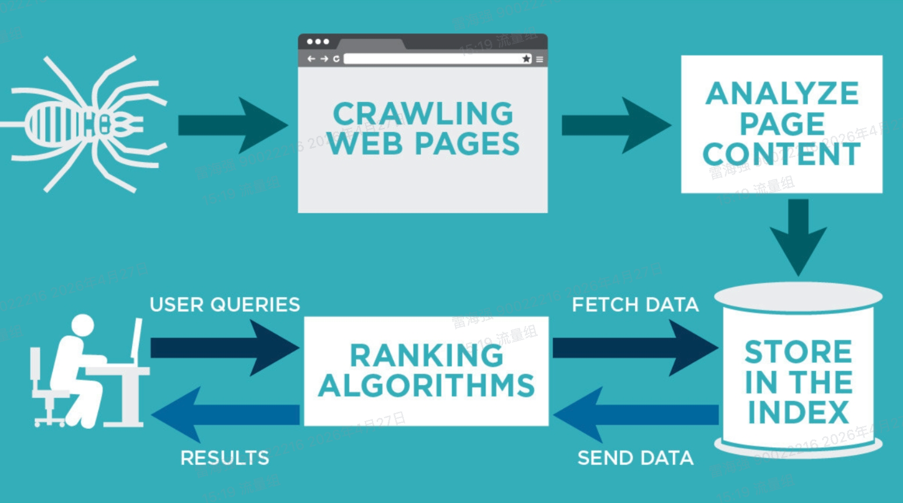
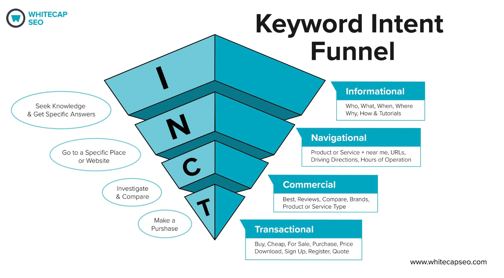
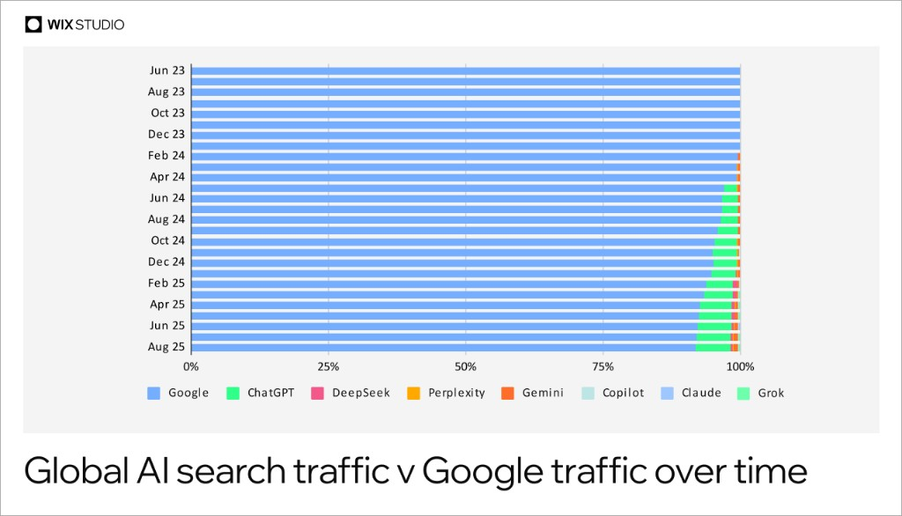
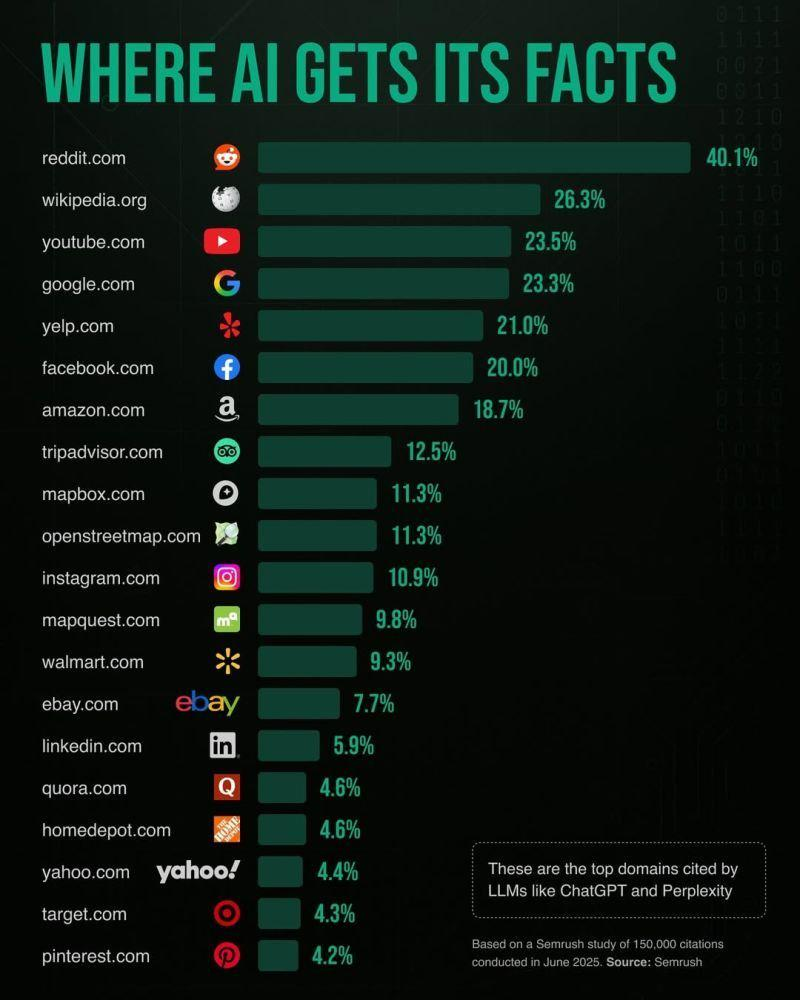
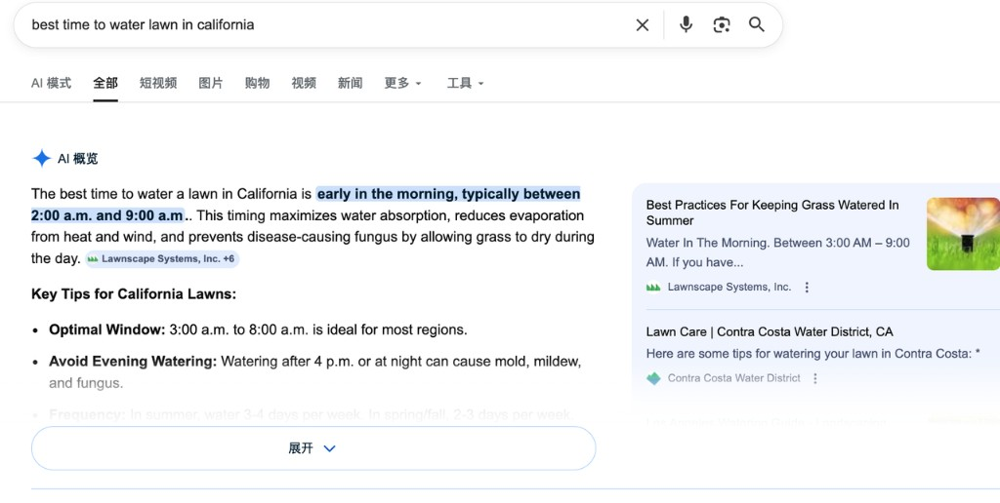

从单一的 SEO 排名，到霸屏 AI 时代的可引用品牌内容网络。
用户输入网址、收藏夹、或浏览器根据历史自动补全进入。大站常见主力之一，完全免费。
点击各类广告进入（搜索广告、Meta、展示、YouTube 等）。带 sponsored 的链接即广告位。
从第三方站点内链点击进入。可能是合作付费链接，也可能是自然引用。
点击搜索引擎自然位结果进入，英文常称 Organic search traffic。SEO 主要争取的就是这一类。
SEO（search engine optimization），就是通过一系列动作，提高网站页面在搜索引擎上的曝光次数、自然搜索排名和总点击次数的工作。
业务实质：搜索引擎派出程序（Bot）扫描全网，寻找新的或更新过的网页。
执行动作：顺着链接「扫街」，寻找新页面。
核心：确保网站大门敞开（服务器稳定）、道路通畅，别让蜘蛛吃闭门羹。
白话：让媒人在茫茫人海中先「看到」你。
角色：搜索引擎的「全球档案库」。
动作：读懂内容并贴上标签，存入数据库。
核心：提供清晰的标题与结构，方便系统快速「分类入库」。
白话：让媒人把你的资料存进档案，「记住」你。

角色：懂「读心术」的专业助手。
动作：听懂搜索词背后的「潜台词」，对症下药。
核心：拒绝自嗨，通过专业且好懂的内容解决用户燃眉之急，建立深度信任。
白话：不做互联网上的「小广告」，要做对的时间遇到的「对的人」。

确保蜘蛛爬得快、网站不宕机、手机访问丝滑。
针对搜索意图写好文章，解决用户痛点。
把标题、描述、图片标签写好，让媒人一眼看中。
让其他高权重网站链接我们，形成「江湖口碑」。
流量结构的「稳定器」
与效果广告互补，构建健康的多渠道流量矩阵，降低对单一渠道的依赖风险。
品牌公信力的「加成点」
自然搜索结果的高排名能有效增强品牌在用户心中的专业度与信任感，提升全渠道转化率。
长期获客的「增量器」
随着内容与权重的积累，逐步摊薄单人获客成本（CPA），实现可持续的流量增长复利。
市场洞察的「反馈桶」
深入挖掘海量搜索背后的真实痛点，为产品迭代与营销策略提供真实、客观的数据支撑。
2023 末至 2024，多轮算法更新后，许多词的前十结果更加多元：
用户搜索行为正在从「只打开传统搜索引擎」转向多工具并存。



本页数据来源： Digital Applied — AI Overviews: 13 Percent of Queries & SEO Impact
SEO 渠道动作性价比下降
单靠 SEO 更难单独拉高传统搜索中的品牌曝光
用户搜索：best robot lawn mower for steep slope
只在首页搜索结果看到一篇 Navimow 官网的 blog。
同一查询下，品牌在 AI 摘要、权威媒体、官网、UGC 与视频中反复露出——即「可引用的品牌内容网络」的典型形态。
Workflow in Action
四阶段可落地全员协作流
阶段 1 / 4
打破「拍脑袋想选题」的传统模式。由 SEO 团队作为「情报雷达」，基于真实搜索意图，提前向 MKT 团队输出详尽的「用户痛点问题清单」与「高潜力流量蓝海主题」。
价值点：确保团队产出的每一篇内容、每一个视频、每一篇PR稿，每一个论坛贴子，都是用户正在全网主动寻找的答案。
阶段 2 / 4
当核心词的 SERP 博客坑位极少、或被权威媒体霸占时，迅速启动「跨团队联合火力」，将一个优质 SEO 主题拆解分发：
转化为官方权威公关稿，抢占媒体背书与高权重外链。
浓缩为干货图文/帖子，利用平台分发算法获取病毒式曝光。
转化为 YouTube / TikTok 测评脚本，实现视觉化的高转化种草。
阶段 3 / 4
跳出单一渠道的考核局限，全员共同审视三大核心指标：
阶段 4 / 4
不仅关注发布后 48 小时的短期曝光，更要识别并提炼出：哪些内容经受住了时间考验，沉淀为长期被用户搜索、被机器算法信任的「数字资产」，以此反哺下一轮内容规划。
AI 时代还需要做传统 SEO 吗？
需要。自然搜索仍是重要入口；变化在于不能只押单一页面排名，而要配合 SERP 多元化与 AI 摘要，建设可被引用、可跨渠道复用的内容资产。
「品牌内容网络」和单纯加强官网 blog 有什么不同？
目标从「推高某几条 URL」转向「在行业高相关词的整页结果里，提高品牌相关内容的占比」——同一主题可拆成 PR、社媒、视频、UGC 等多形态，协同占位。
AI Overview / ChatGPT 里出现品牌，要怎么跟踪？
除品牌词自然量（Brand lift）外，可抽样监测典型问题下是否被摘录、引用来源是否包含自有与合作媒体；与曝光、全域转化一并复盘，而非只看单渠道点击率。
团队资源有限，必须所有渠道都做吗？
不必一次性铺开。可按「规划期」清单优先高意图主题，先看 SERP 缺什么形态（视频、权威媒体、UGC），再选 1～2 个渠道联合试水，用传播与复盘数据迭代下一波。